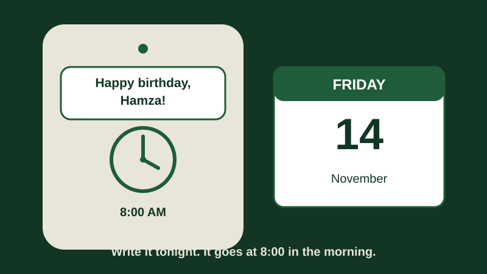

How to Schedule a Text Message to Send Later on Your Samsung Galaxy
Abdul is 72 years old. His grandson Hamza turns ten years old on Friday. Abdul wants to be the first person to wish him a happy birthday, at eight o'clock in the morning, before anyone else. But Abdul wakes up late on Fridays, and he forgets things he planned the night before.
His daughter Farah took Abdul's phone and opened Messages. She typed "Happy birthday, Hamza! Your grandfather loves you very much. Come for lunch on Sunday." Then, instead of sending it, she tapped a small button, picked Friday, eight o'clock in the morning, and tapped "Done". "Now sleep peacefully," Farah said. "The phone will send it at eight o'clock by itself, even if you are still asleep."
That is what this guide shows you. A scheduled message is a message you write now, and your phone sends later, at a time you choose. You can write it in the evening, when you have time, and let the phone do the sending in the morning. If you change your mind, you can change it, or stop it, as long as the time has not come yet.

What scheduling a text message means
Think of it like a letter. Normally, when you write a text and tap "Send", the postman takes it at once. A scheduled message is like writing the letter in the evening and telling the postman, "Please take this tomorrow at eight o'clock." The letter is ready. The sending happens later, without you doing anything.
Your phone keeps the scheduled message safe until the time comes. When the time arrives, it sends the message exactly as you wrote it, to the person you chose. You do not need to remember it, and you do not need to be awake. That is the whole idea.
This guide is about normal text messages in the Messages app. It is not about WhatsApp, which does not usually have a "send later" button on most phones.
Before you start
A scheduled message is easy to make, but a little checking first will save you trouble later. Go through these small checks once, before you write the message.
- Know who the message is for. Use a person who is already in your contacts, with the correct number saved. If the number is not saved, save it first. Read How to Save a Contact and Find It Again if you need help. A scheduled message sent to the wrong number cannot be taken back.
- Write the message in your head first. A short message is best. "Happy birthday, Hamza! Your grandfather loves you. Come for lunch on Sunday." That is enough. Long messages are easy to get wrong, so keep it simple.
- Check the date and time on your phone. Look at the clock on the home screen. If the date or the time is wrong, the message will go at the wrong time. Ask someone in your family to help you fix it, or read the section "If the words on your screen look different" at the end of this guide, which tells you how to search for the date and time setting.
- Check morning and evening carefully. Phones use AM for the morning and PM for the evening. Eight o'clock in the morning is 8:00 AM, and eight o'clock in the evening is 8:00 PM. This is the most common mistake in this whole guide, so read the time twice before you tap "Done".
- Make sure the phone has signal. A text message needs a mobile signal to leave your phone, the same as a phone call does. If you are in a place with no signal, the message will wait, and go when the signal comes back. This guide explains that below, in "What happens if the phone is off or has no signal".
How to schedule a text message
These steps are for the Samsung Messages app, the one that comes with your Galaxy phone. Its picture is usually a white speech bubble on a blue or green background, and it is often called just "Messages". If your phone opens a different app for texts, read the section "If your phone has no schedule button" later in this guide.
- Open Messages. Tap the app with the speech-bubble picture on your home screen or in your app list.
- Open the chat with the person you want to message, by tapping their name in the list. If you have never messaged them, tap the small "new message" button, usually a pencil or a plus sign, and pick the person from your contacts.
- Type the message in the box at the bottom of the screen, as you normally would. Read it once, slowly, and check the name at the top of the screen. Is it the right person?
- Now, instead of tapping the send arrow, look for the schedule button. On many Galaxy phones, you tap the plus sign (+) next to the message box, or the small arrow beside the send button, and then you see a choice that says something like "Schedule message". On some phones, the button looks like a small clock. The name can look a little different on different phones, so look for the words "schedule" or "send later", or a small clock picture.
- Tap "Schedule message" or the clock button. A small box will appear with a date and a time. It usually shows tomorrow's date, and the time is the one from the clock on your phone.
- Tap the date first. A calendar will appear. Tap the day you want the message to go — for Abdul, that is Friday — and check the month is right too, then tap "OK" or "Done".
- Tap the time next. Small wheels or boxes will appear for the hour and the minutes. Roll or tap them to the time you want — for Abdul, eight o'clock in the morning. Now check AM or PM, twice. If you wanted eight in the morning, it must say 8:00 AM, not 8:00 PM. When the date and the time are both right, tap "Done" or "OK".
- The schedule box will close. Your message is in the box again, with a small clock picture next to it. Tap the send arrow now. This does not send the message at once — it only puts it into the queue, ready for the time you picked.
- Look at the chat. Your scheduled message should be sitting there with a small clock picture, or words like "Scheduled" and the date and time. If you see that, you have done it.
- Put the phone down. You do not need to do anything else. The message will go by itself, even if you are asleep, as long as the phone is switched on and has signal.
One thing confuses many people: you still have to tap the send arrow in step 8. The schedule button only picks the time. Tapping the arrow saves the scheduled message. If you close the app without tapping the arrow, nothing will be sent.
How to see that it is scheduled
After step 9, your message sits in the chat, waiting for its time. Here is how to check that it is really there.
- Look for a small clock picture next to the message, or on its corner. A normal sent message has no clock. A scheduled message almost always shows one.
- Look for the word "Scheduled" under the message, sometimes with the date and the time beside it, like "Scheduled — Friday, 8:00 AM". If you see it, the message is waiting, not sent.
- Look at the background colour. On some phones, a scheduled message sits in a slightly different shade, or in a box of its own, apart from the sent messages. That is only a visual hint, but it helps you spot it.
- Open the chat again later. If the time has passed, the clock picture should be gone, and the message should look like a normal sent message. If the clock is still there, read the section "If it did not send" below.
Change or cancel a scheduled message
Sometimes you change your mind. Farah called in the evening and said Hamza's birthday lunch has moved to Saturday, not Sunday. Abdul has until eight o'clock on Friday morning to change the message. Here is how.
- Open Messages, and open the chat where the scheduled message is waiting.
- Find the message with the small clock picture on it. It should be the last one in the chat, waiting at the bottom.
- Press and hold your finger on that message, for two or three seconds, until a small menu appears at the top or the bottom of the screen.
- Look for a choice that says "Edit", "Edit message", or a pencil picture. Tap it, change the words, and save it again. The message stays scheduled for the same date and time, only the words change.
- If you want to cancel the message completely, press and hold it again, and look for "Delete" or a dustbin picture. Tap it, and if the phone asks "Are you sure?", tap "Delete" again. The message is gone, and nothing will be sent.
- If you want to change the time instead of the words, delete the old message and make a new one with the new time. On most phones there is no simple "change the time" button for a message that is already scheduled, so making a fresh one is the safest way.
The important rule is this: you can change or cancel a scheduled message only before its time comes. Once the time has passed and the phone has sent it, it is a normal message. You cannot take it back. Check it in the evening, before you go to sleep, when there is still time to fix it.
Practise with Abdul
Let us practise with Abdul. He sits in his armchair after dinner on Thursday evening. He opens Messages, opens the chat with Hamza, and types: "Happy birthday, Hamza! Your grandfather loves you very much. Come for lunch on Sunday." He reads it once, and the name at the top says "Hamza". Good.
He taps the plus sign, then "Schedule message". The box shows Friday's date already, but he taps the date anyway to check it. It says Friday, and the month is right. He taps the time, rolls it to 8:00, and checks: it says 8:00 AM. Morning. Correct. He taps "Done", then the send arrow. The message sits in the chat with a small clock picture and the words "Scheduled — Friday, 8:00 AM".
In the evening, Farah phones and says lunch has moved to Saturday. Abdul opens the chat, presses and holds the message, taps "Edit", and changes "Sunday" to "Saturday". The message is still scheduled for Friday at eight in the morning, only the lunch day has changed. On Friday morning, at eight o'clock, Hamza's phone shows the message. Abdul was the first to wish him happy birthday.
Now try it yourself, with a small test first. Schedule a short message to someone in your family for one hour from now, for example "This is a test, please ignore it." When it arrives, you will know the whole thing works.
What happens if the phone is off or has no signal
This is a question almost everyone asks, and the answer is simple, but worth reading carefully.
If your phone is switched off when the time comes, the message cannot go. When you switch the phone back on, the message should send shortly after, usually within a few minutes. The phone remembers the message while it is off, and tries again when it is on. So a message for eight in the morning will still go if you switch the phone on at half past eight, only a little late.
If your phone is on, but it has no signal — for example, in a village with weak coverage, or in a lift, or in a basement — the message also waits. When the signal comes back, the message should send by itself, usually within a few minutes. You do not need to do anything. The same is true in Airplane mode: the message waits, and goes when you turn Airplane mode off.
The safest habit is to leave the phone switched on, with signal, and charging, on the night you schedule a message. If the battery dies before the time comes, the message will wait until you charge the phone and switch it on again — late, but better than nothing. Read How to Make Your Phone Battery Last Longer if your battery runs out often.
If your phone has no schedule button
Not every phone has a schedule button in the same place, and a few do not have one at all in the Messages app. Here is what to do in each case.
First, check that you are in the Samsung Messages app, not Google Messages or another app that someone put on your phone. If your phone opens Google Messages, the schedule button is in a different place: there, you press and hold the send arrow, and a schedule box appears. The idea is the same, only the button is different.
If you really cannot find any schedule button, your phone or app version may not have this feature. Do not worry — there is a simple fallback that works on every phone. Set an alarm for the time you want to send the message, and write the message and the person's name on a small piece of paper next to the phone. When the alarm rings, send the message yourself. Read How to Set an Alarm on Your Samsung Galaxy if you need help with alarms. It is not as clever as scheduling, but it never fails.
A second fallback is to ask a family member to send the message for you at the right time. There is no shame in it — the point is that the message arrives on time, not who tapped the button.
If it did not send
Sometimes the time passes and the message still sits in the chat with its small clock. Do not panic. Work through these checks, in order.
- Did you remember the date? Look at the scheduled time under the message. If it says Friday and you are looking on Thursday, nothing is wrong — it will go on Friday. Many people check too early and think it has failed, when it has not.
- Check AM and PM. If you wanted eight in the morning and the message says 8:00 PM, it will go at eight in the evening, not the morning. Read the scheduled time under the message. If it says PM where you wanted AM, delete it and schedule it again, with AM this time.
- Check the phone's signal. Look at the small bars at the top of the screen. If there are no bars, or the phone says "No service" or "Emergency calls only", the message is waiting for signal. Walk near a window, or out of the basement, and wait a few minutes. It should go by itself.
- Restart the phone. If the phone is on, has signal, and the time has passed, switch it off, wait ten seconds, and switch it on again. A restart often wakes up a message that is stuck. Wait five minutes, and check the chat again.
- Send it yourself. If the time has come and the message is still not sent, delete the scheduled message and send the same words now, as a normal text. A late message is better than no message at all. Test it again next time with a small test message one hour ahead.
Common mistakes
- Setting AM when you meant PM, or the other way around. Eight in the morning and eight in the evening are both "8:00" on the small wheels, and only the letters AM or PM are different. Read the letters out loud before you tap "Done".
- Picking the wrong date or month. The calendar shows the month at the top, and it is easy to tap the same number in the wrong month. Check the month word, not only the number.
- Forgetting to tap the send arrow after picking the time. The schedule box only picks the time. Tapping the send arrow is what saves the message. Without it, nothing is scheduled.
- Writing the message to the wrong person. If you open the wrong chat, the birthday message goes to the wrong person. Check the name at the top of the screen before you write a single word.
- Trying to schedule a message on WhatsApp. WhatsApp does not usually have a "send later" button on most Galaxy phones. Scheduling is for normal text messages, in the Messages app.
- Scheduling a message and then turning the phone off. The phone cannot send while it is off. Leave it on, and charge it in the evening, so it is awake when the time comes.
- Trying to change a message after it has already gone. Once the time has passed, a scheduled message is a normal message, and you cannot take it back. Change it the evening before, when you still have time.
Frequently asked questions
Does scheduling a text cost extra money?
No. A scheduled text costs the same as a normal text message. If your plan gives you free texts, the scheduled one is free too. Scheduling does not add anything at all.
Does my phone have to be switched on when the message sends?
Yes. The phone must be switched on, and it needs a mobile signal. If it is off, the message waits and sends when you switch it back on, a little late. Leave the phone on, and charging, on the night you schedule a message.
Can I schedule a message on WhatsApp?
Usually not, on most Galaxy phones. WhatsApp does not have a built-in "send later" button like the Messages app does. If you need one at a fixed time, use the alarm trick instead: set an alarm, and send the WhatsApp message yourself when it rings.
Can I schedule a message to more than one person?
Yes, if you start or open a group chat. Write the message in the group chat, schedule it the same way, and it will go to everyone in the group at the chosen time. But check the group name twice before you schedule it.
What if I change my mind after the message has been sent?
Then you cannot take it back. If you made a small mistake, send a second message that says "Sorry, the date is Saturday, not Sunday", and it will be fine. People understand small mistakes. Only the time before sending lets you edit or delete the message.
If the words on your screen look different
Menu words may look a little different on your phone. That is normal. Samsung makes many Galaxy models — A-series and S-series — and they do not all show the exact same words. Your phone company, called a carrier, can also change some words, and so can your country or region. And your One UI version matters. In November 2026, some phones use One UI 8, some use One UI 8.5, and some use One UI 9. That is why this guide tells you to look for "Schedule message", "Send later", a small clock picture, or a plus sign beside the message box, instead of one fixed set of words.
If you cannot find a schedule button at all, first check that you are in the Samsung Messages app, and then try pressing and holding the send arrow, because on some messaging apps that is where the schedule box hides. If nothing appears, your app version may not have the feature, and the alarm fallback in this guide will do the job. And if the date or the time on your phone looks wrong, search in Settings for "Date and time", and check that "Automatic date and time" is switched on.